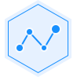

<!-- <div nz-row style="height: calc(100% - 60px);padding: 0,15px;">

  <div nz-col [nzSpan]="4" class="div_1"> -->

<!-- <div style="height: 150px;text-align: center;line-height: 150px;">
      
    </div>

    <div style=" height: calc(100% - 150px);text-align:center;">
      <div *ngFor="let item of menuItems;index as index" class="div_menu" (click)="clickMenu(item)" [ngClass]="{true:'menu_select',false:''}[selectMenuName==item.name]">
        {{item.name}}
      </div>
    </div> -->
<nz-layout>
  <nz-sider [nzWidth]="260" style="background:#fff">
    <ul nz-menu [nzMode]="'inline'" style="height:100%">
      <li nz-menu-item click="click(1)">核设施统计</li>
      <li nz-menu-item>铀尾矿(渣)库统计</li>
      <li nz-submenu>
        <span title>核安全许可</span>
        <ul>
          <li nz-menu-item>核设施许可统计</li>
          <li nz-menu-item>核安全设备许可统计</li>
          <li nz-menu-item>核活动许可统计</li>
        </ul>
      </li>
      <li nz-submenu>
        <span title>核安全审评统计</span>
        <ul>
          <li nz-menu-item>核设施审评统计</li>
          <li nz-menu-item>核安全设备审评统计</li>
          <li nz-menu-item>核活动审评统计</li>
        </ul>
      </li>
      <li nz-submenu>
        <span title>核安全监督统计</span>
        <ul>
          <li nz-menu-item>日常监督统计</li>
          <li nz-menu-item>监督检查统计</li>
          <li nz-menu-item>监督见证统计</li>
        </ul>
      </li>
      <li nz-submenu>
        <span title>安全问题统计</span>
        <ul>
          <li nz-menu-item>核社会营运单位安全问题统计</li>
          <li nz-menu-item>核设施安全问题统计</li>
          <li nz-menu-item>核安全设备安全问题统计</li>
          <li nz-menu-item>铀尾矿(渣)库安全问题统计</li>
        </ul>
      </li>
      <li nz-menu-item>事故事件统计</li>
    </ul>
  </nz-sider>
  <!-- </div> -->
  <nz-content>
    <app-fac-report *ngIf="reportId=='1'"></app-fac-report>
    <!-- <div class="div_search"> -->
      <!-- <div class="div_search_item">
        统计对象：所有核设施
      </div> -->
      <!-- <div class="div_search_item">
        统计方式：
        <nz-radio-group [(ngModel)]="typeValue"> 
          <label nz-radio nzValue="1">建造年代</label>
          <label nz-radio nzValue="2">监管类别</label>
          <label nz-radio nzValue="3">设施类型</label>
          <label nz-radio nzValue="4">设施状态</label>
          <label nz-radio nzValue="5">所在区域</label>
          <label nz-radio nzValue="6">审评状态</label>
          <label nz-radio nzValue="7">许可情况</label>
          <label nz-radio nzValue="8">抗震设防</label>
          <label nz-radio nzValue="9">防洪要求 </label>
        </nz-radio-group>
      </div> -->
      <!-- <div class="div_search_item" style="text-align: right;">
        <button nz-button nzType="primary" (click)="statistics()">统计</button>
      </div> -->
  <!-- </div> -->

  <!-- <div class="div_tab">
    <nz-tabset>
      <nz-tab nzTitle="统计图" style="text-align: center">
        <div id="chart3qq" style="height: 400px;text-align: center">

        </div>
      </nz-tab>
      <nz-tab nzTitle="统计表">
        <nz-table #nestedTable [nzData]="dataSet" class="commontable" 
        [nzFrontPagination]="false" [nzShowPagination]="false" 
        [nzNoResult]="" *ngIf="typeValue==='1'">
        <thead>
          <tr>
            <th>建造年代</th>
            <th *ngFor="let item of data">{{item.name}}</th>
          </tr>
        </thead>
        <tbody>
          <tr>
            <td>核设施统计</td>
            <td *ngFor="let item of data">{{item.value}}</td>
          </tr>
        </tbody>
      </nz-table>
      </nz-tab>
    </nz-tabset>
  </div> -->
  </nz-content>
</nz-layout>
<!-- <div nz-col [nzSpan]="20" style="background: #fff;height: 100%;padding: 10px;">
      <div class="div_search">
          <div class="div_search_item">
            统计对象：所有核设施
          </div>
          <div class="div_search_item">
            统计方式：
            <nz-radio-group>
              <label nz-radio nzValue="1">建造年代</label>
              <label nz-radio nzValue="2">监管类别</label>
              <label nz-radio nzValue="3">设施类型</label>
            </nz-radio-group>
          </div>
          <div class="div_search_item" style="text-align: right;">
            <button nz-button nzType="primary" >统计</button>
          </div>
      </div>

      <div class="div_tab">
        <nz-tabset>
          <nz-tab nzTitle="统计图">
            <div id="chart3qq" style="height: 230px;">

            </div>
          </nz-tab>
          <nz-tab nzTitle="统计表">
            <nz-table #nestedTable [nzData]="dataSet" class="commontable" [nzFrontPagination]="false" [nzShowPagination]="false" [nzNoResult]="">
            <thead>
              <tr>
                <th>建造年代</th>
                <th>旧设施</th>
                <th>新设施</th>
              </tr>
            </thead>
            <tbody>
              <tr>
                <td>核设施统计</td>
                <td>47</td>
                <td>74</td>
              </tr>
            </tbody>
          </nz-table>
          </nz-tab>
        </nz-tabset>
      </div>
  </div>

</div> -->